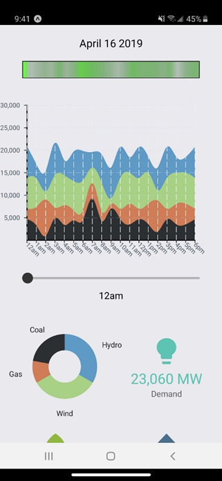

This was a Capstone group project for a course in college (CS 420/421) in Spring 2019. We developed an app for the Northwest Power and Conservation Council. Unfortunately the github repository is private so I can't provide a link to it.
What does this project do? This project was meant for average power consumer in the Pacific Northwest. Power plants create waste when generating power. There are different ways of generating power and some ways are friendlier to the environment than others. This app uses machine learning to predict which power plants are on and how much energy they are producing. It also determines what percentage of hydro, wind, gas, and coal power is being used to generate your power. It essentially lets you see how green the power you're using is.
There are plenty of different ways to generate power. This app looks at the four most prominent ways power is generated in the Pacific Northwest.
Hydro: Hydropower is very abundant in the Pacific Northwest and is pretty eco friendly.
Wind: Wind turbines are efficient and more eco efficient, the only problem is that there are only certain areas where they work.
Gas: Thermal power uses fossil fuels to generate electricity. It is far less eco friendly than the previous options.
Coal: Coal power is pretty harmful to the environment and slowly going away as it is a fossil fuel.
New predictions are generated at the start of each hour. The next twelve hours and the previous twelve hours are shown. It also generates an ecofriendliness timeline at the top of the screen. The amount of each resource being used is taken into the calculation. This timeline ranges from gray to green where gray is less eco friendly and green is more eco friendly.
The app itself was made in React. The app communicates with the server API which was made in Python and Flask. The Python server uses Tensorflow to generate the predictions which are cahced using Redis. All of the data is gathered using Python.
Data is gathered from a variety of sources. Current weather data is gathered from DarkSky API. Flowgate data from Bonneville Power Administration is collected directly from their website. Powerplant data is collected from the Continuous Emission Monitoring system. River height data is also collected.